Dynamical Susceptibility and Excitations - Formalism for mcdisp
This section is describes the formalism used in the calculation of the magnetic excitations. Because the
procedure is not standard, we list the most important formulas.
We assume a quantum mechanical system that can be described by the Hamiltonian
 |
(200) |
The first term
 denotes the Hamiltonian of
a subsystem
denotes the Hamiltonian of
a subsystem  (e.g. an ion, or cluster of ions). The second term describes a bilinear interaction
between different subsystems
through the operators
(e.g. an ion, or cluster of ions). The second term describes a bilinear interaction
between different subsystems
through the operators
 , with
, with
 . The operators
and
act in the subspace of the Hilbert space, i.e.
. The operators
and
act in the subspace of the Hilbert space, i.e.
![$[\hat \mathcal I_{\alpha}^n,\hat \mathcal I_{\alpha}^{n'}]=0$](img49.png) ,
,
![$[\hat \mathcal H(n),\hat \mathcal I_{\alpha}^{n'}]=0$](img50.png) and
and
![$[\hat \mathcal H(n),\hat \mathcal H(n')]=0$](img51.png) for
for  27.
For example, in the case of a Heisenberg
exchange between magnetic ions we would identify the set of operators with
27.
For example, in the case of a Heisenberg
exchange between magnetic ions we would identify the set of operators with
 with the three components of the spin:
with the three components of the spin:
 .
The beauty of the analysis which follows is that it can be applied to
almost any Hamiltonian of the form (213). The analysis
of complex magnetic systems can thus be attempted by starting from a simple
form such as the Heisenberg model and by introducing, step-by-step, more
complexity into the model. For example, anisotropy and interactions with extended range can be introduced by modifying
.
The beauty of the analysis which follows is that it can be applied to
almost any Hamiltonian of the form (213). The analysis
of complex magnetic systems can thus be attempted by starting from a simple
form such as the Heisenberg model and by introducing, step-by-step, more
complexity into the model. For example, anisotropy and interactions with extended range can be introduced by modifying
 , higher order operators can be
introduced by extending the index range for
, higher order operators can be
introduced by extending the index range for  , and a complex single-ion term
may be added.
Another example for a Hamiltonian (213) is the problem of lattice dynamics, which can
be treated in the framework of this
formalism by identifying the operators
, and a complex single-ion term
may be added.
Another example for a Hamiltonian (213) is the problem of lattice dynamics, which can
be treated in the framework of this
formalism by identifying the operators
 with the atomic displacements
with the atomic displacements  . Here the index is not necessary and
refers to both, the atomic position index and the spatial coordinate of the displacement,
. Here the index is not necessary and
refers to both, the atomic position index and the spatial coordinate of the displacement,
 . Note that this can be done, because the three spatial components of the
displacement operators commute with each other (in contrast to the components of the spin) and each displacement
component acts in its own subspace of the Hilbert space. The kinetic energy
will be part of the single ion term
. Allowing more complexity to the system,
both the spin and lattice degrees of freedom can be introduced and spin-phonon interactions can be
handled by the theory.
. Note that this can be done, because the three spatial components of the
displacement operators commute with each other (in contrast to the components of the spin) and each displacement
component acts in its own subspace of the Hilbert space. The kinetic energy
will be part of the single ion term
. Allowing more complexity to the system,
both the spin and lattice degrees of freedom can be introduced and spin-phonon interactions can be
handled by the theory.
The main limitation of the approach is that it neglects fluctuations associated with phase
transitions and quantum disorder. We are primarily concerned, therefore, with excitations
associated with a well-ordered ground state.
The translational symmetry of the system is
represented by a Bravais lattice (which, in general,
will be a superlattice of a crystal lattice).
The position of subsystem can be specified by a lattice
vector
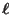 and a basis vector 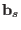. The latter is
the position of relative to
.
The index  (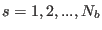) labels the subsystems
within the unit cell.
(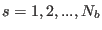) labels the subsystems
within the unit cell.
The calculation of the excited states of the
system starts from a mean-field model for the ground-state order.
We define a mean field acting on each subsystem by
where
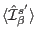 represents the thermal expectation value at a temperature  in the mean
field acting on subsystem 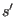. Note that the mean field
is periodic in the lattice, so does not depend on
.
The mean-field Hamiltonian for subsystem is then given by
in the mean
field acting on subsystem 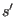. Note that the mean field
is periodic in the lattice, so does not depend on
.
The mean-field Hamiltonian for subsystem is then given by
The mean-field ground state is obtained from the self-consistent solution of (214) and (215). This iterative procedure is illustrated in fig. 26. The mean field Hamiltonian (215)
for the subsystem
is used to calculate the thermal
expectation values
for the initial mean field acting
on all subsystems 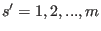.
Equation (214) is then used to calculate
a new set of mean fields. These are again
used in (215), and the procedure
repeated until convergence is reached to within
some specified precision. The free energy of
the mean field ground state is evaluated and
compared to that of other solutions obtained
at the same temperature (computed from other
initial states and superlattices). The solution with
the lowest free energy corresponds to the stable ground state.
We now turn to the excited states. From linear response theory it can
be shown [1, page 143]
that the excited states are poles of the dynamical susceptibility,
which is defined by
where
and
Here the energy levels and eigenstates
of the Hamiltonian (213) are denoted by 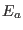 and
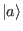, respectively.
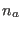 is the corresponding
Boltzmann occupation probability.
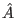 and 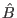 are
quantum mechanical operators describing the perturbation
to the Hamiltonian and the response of the system
according to the general concept of linear response theory [1].
The expression (216) is based on a system with well defined
energy levels implying that the poles of
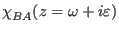 are all lying on the real axis,
or that the absorptive part of the response function
becomes a sum of  -functions, which are only non-zero when
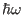 is equal to the excitation energies 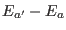. If
the susceptibility contains an elastic contribution, then the
function
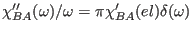
in the zero frequency limit. In any realistic, interacting system the
energy levels are no longer discrete states and fluctuations will
cause spontaneous transitions between the different levels. Nonzero
probabilities for such transitions may be accounted for in a
phenomenological way by replacing in equation (216)
by
-functions, which are only non-zero when
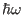 is equal to the excitation energies 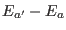. If
the susceptibility contains an elastic contribution, then the
function
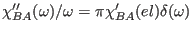
in the zero frequency limit. In any realistic, interacting system the
energy levels are no longer discrete states and fluctuations will
cause spontaneous transitions between the different levels. Nonzero
probabilities for such transitions may be accounted for in a
phenomenological way by replacing in equation (216)
by
 , where
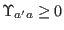. In this
approximation the response becomes a sum of Lorentzians
, where
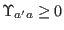. In this
approximation the response becomes a sum of Lorentzians
The same result is obtained if 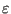 is kept as a nonzero
positive quantity in (216) instead of taking the limit
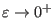, i.e. if assuming
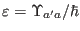 in the different terms in the sum
and
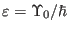 in the elastic term.
Because of the periodicity of our system we define generalized
susceptibilities
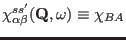 by choosing the Fourier transform operators
|
 |
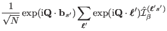 |
(208) |
| 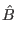 |
|
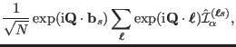 |
(209) |
where  is the number of unit cells. It will also be convenient to introduce the Fourier transform of the two-body interaction
is the number of unit cells. It will also be convenient to introduce the Fourier transform of the two-body interaction
We have arbitrarily chosen
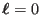 since
 is the same for all
due to the translational symmetry.
is the same for all
due to the translational symmetry.
Figure 26:
Illustration of the iterative flow used for solving the mean-field
Hamiltonian eq. (215)
| 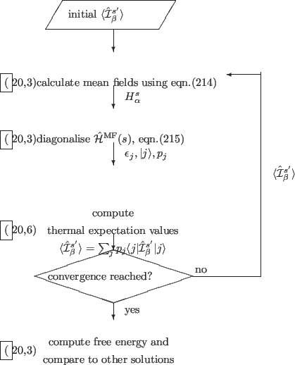 |
The calculation of the dynamical
susceptibility28
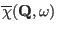
from the Hamiltonian (5) is carried out
within the
mean field - random phase approximation
(MF-RPA) [1,66].
This approximation neglects correlations
in the differences
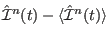 of
different subsystems .
In this approach the dynamical
susceptibility
for a primitive lattice (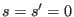)
can be calculated from the solution to
where
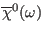 is the usual single ion magnetic
susceptibility tensor.
This equation can be written for the more general case of several
subsystems (
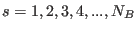) as
or, in index notation, to
where
 is the
subsystem susceptibility (the same for all
), given by
is the
subsystem susceptibility (the same for all
), given by
where for the sake of simplicity we omit the index
on all quantities on the right-hand side.
Here 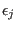 and 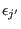 are
energy levels of the subsystem as calculated
self-consistently within the mean-field theory
using the Hamiltonian (215),
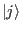 and 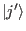 denote the corresponding
eigenstates and 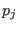 the corresponding population numbers:
The writing of (227) has been simplified in two ways. The obvious
one is that  should read
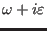 where
. Secondly, the elastic contribution is included
in (227) by assuming the use of the following convention:
is being replaced by
should read
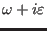 where
. Secondly, the elastic contribution is included
in (227) by assuming the use of the following convention:
is being replaced by
 in all terms
where
. The shift in energy introduced is
and hence
to leading order. Notice that
the matrix elements of the thermal expectation values in (227) are
only nonzero in the special cases of . Using the two
conventions equation (227) becomes
equivalent to (216) in the limit of
(after taking the limit
).
Since the expectation values are only needed
in (227) when considering the elastic contribution, we may use this
fact to signal that the second convention has to be applied whenever
the expectation values are subtracted from the operators.
in all terms
where
. The shift in energy introduced is
and hence
to leading order. Notice that
the matrix elements of the thermal expectation values in (227) are
only nonzero in the special cases of . Using the two
conventions equation (227) becomes
equivalent to (216) in the limit of
(after taking the limit
).
Since the expectation values are only needed
in (227) when considering the elastic contribution, we may use this
fact to signal that the second convention has to be applied whenever
the expectation values are subtracted from the operators.
In order to evaluate
equations
(224)-(227) without producing a numerical divergence
it is necessary to add to a small imaginary constant
and insert this into equation (227).
If the option -r  is used,
the program McDisp calculates the above expression for every energy
and stores the result in ./results/mcdisp.dsigma.
is used,
the program McDisp calculates the above expression for every energy
and stores the result in ./results/mcdisp.dsigma.
If the option -r is not used, the
program mcdisp uses only the extremely fast DMD (Dynamical Matrix Diagonalisation)
algorithm[67] to calculate excitation energies and intensities and store the result in mcdisp.qom,
mcdisp.qei, etc.. The flowing chart of such a calculation is shown in fig. 27
and the formalism is outlined hereafter:
Subsections